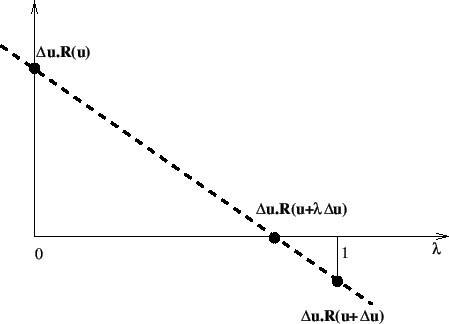
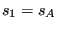
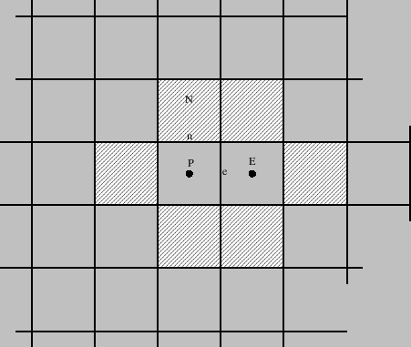

Keyword type: step
This option allows the specification of distributed loads. These include constant pressure loading on element faces, edge loading on shells and mass loading (load per unit mass) either by gravity forces or by centrifugal forces.
For surface loading the faces of the elements are numbered as follows (for the node numbering of the elements see Section 3.1):
for hexahedral elements:
for tetrahedral elements:
for wedge elements:
for triangular plane stress, plane strain and axisymmetric elements:
for beam elements:
For shell elements no face number is needed since there is only one kind of loading: pressure in the direction of the normal on the shell.
The surface loading is entered as a uniform pressure with distributed load type label Px where x is the number of the face. Thus, for pressure loading the magnitude of the load is positive, for tension loading it is negative. For nonuniform pressure the label takes the form PxNUy, and the user subroutine dload.f must be provided. The label can be up to 20 characters long. In particular, y can be used to distinguish different nonuniform loading patterns (maximum 16 characters). A typical example of a nonuniform loading is the hydrostatic pressure. Another option is to assign the pressure of a fluid node to an element side. In that case the label takes the form PxNP, where NP stands for network pressure. The fluid node must be an corner node of a network element. Instead of a concrete pressure value the user must provide the fluid node number.
Edge loading is only provided for shell elements. Its units are force per unit length. The label is EDNORx where x can take a value between one and three for triangular shells and between one and four for quadrilateral shells. This type of loading is locally orthogonal to the edge. Internally, it is replaced by a pressure load, since shell elements in CalculiX are expanded into volumetric elements. The numbering is as follows:
for triangular shell elements:
for quadrilateral shell elements:
For centrifugal loading (label CENTRIF) the rotational speed square () and two points on the rotation axis are required, for gravity loading with known gravity vector (label GRAV) the size and direction of the gravity vector are to be given. Whereas more than one centrifugal load for one and the same set is not allowed, several gravity loads can be defined, provided the direction of the load varies. If the gravity vector is not known it can be calculated based on the momentaneous mass distribution of the system (label NEWTON). This requires the value of the Newton gravity constant by means of a *PHYSICAL CONSTANTS card.
The limit of one centrifugal load per set does not apply to linear dynamic (*MODAL DYNAMIC) and steady state (*STEADY STATE DYNAMICS) calculations. Here, the limit is two. In this way a rotating eccentricity can be modeled. Prerequisite for the centrifugal loads to be interpreted as distinct is the choice of distinct rotation axes.
Optional parameters are OP, AMPLITUDE, TIME DELAY, LOAD CASE and SECTOR. OP takes the value NEW or MOD. OP=MOD is default. For surface loads it implies that the loads on different faces are kept from the previous step. Specifying a distributed load on a face for which such a load was defined in a previous step replaces this value, if a load was defined on the same face within the same step it is added. OP=NEW implies that all previous surface loading is removed. For mass loading the effect is similar. If multiple *DLOAD cards are present in a step this parameter takes effect for the first *DLOAD card only.
The AMPLITUDE parameter allows for the specification of an amplitude by which the force values are scaled (mainly used for dynamic calculations). Thus, in that case the values entered on the *DLOAD card are interpreted as reference values to be multiplied with the (time dependent) amplitude value to obtain the actual value. At the end of the step the reference value is replaced by the actual value at that time. In subsequent steps this value is kept constant unless it is explicitly redefined or the amplitude is defined using TIME=TOTAL TIME in which case the amplitude keeps its validity. For nonuniform loading the AMPLITUDE parameter has no effect.
The TIME DELAY parameter modifies the AMPLITUDE parameter. As such, TIME DELAY must be preceded by an AMPLITUDE name. TIME DELAY is a time shift by which the AMPLITUDE definition it refers to is moved in positive time direction. For instance, a TIME DELAY of 10 means that for time t the amplitude is taken which applies to time t-10. The TIME DELAY parameter must only appear once on one and the same keyword card.
The LOAD CASE parameter is only active in *STEADY STATE DYNAMICS calculations with harmonic loading. LOAD CASE = 1 means that the loading is real or in-phase. LOAD CASE = 2 indicates that the load is imaginary or equivalently phase-shifted by . Default is LOAD CASE = 1.
The SECTOR parameter can only be used in *MODAL DYNAMIC and *STEADY STATE DYNAMICS calculations with cyclic symmetry. The datum sector (the sector which is modeled) is sector 1. The other sectors are numbered in increasing order in the rotational direction going from the slave surface to the master surface as specified by the *TIE card. Consequently, the SECTOR parameters allows to apply a distributed load to any element face in any sector.
Notice that in case an element set is used on any line following *DLOAD this set should not contain elements from more than one of the following groups: {plane stress, plane strain, axisymmetric elements}, {beams, trusses}, {shells, membranes}, {volumetric elements}.
If more than one *DLOAD card occurs within the input deck, or a *DLOAD and at least one *DSLOAD card, the following rules apply:
If a *DLOAD or *DSLOAD with label P1 up to P6 or EDNOR1 up to EDNOR4 or BF is applied to an element for which a *DLOAD or *DSLOAD with the SAME label was already applied before, then
If a *DLOAD with label CENTRIF is applied to the same set AND with the same rotation axis as in a previous application, then
If a *DLOAD with label GRAV is applied to the same set AND with the same gravity direction vector as in a previous application, then
First line:
Following line for surface loading:
Example: *DLOAD,AMPLITUDE=A1 Se1,P3,10.
assigns a pressure loading with magnitude 10. times the amplitude curve of amplitude A1 to face number three of all elements belonging to set Se1.
Example files: beamd.
Following line for centrifugal loading:
Example: *DLOAD Eall,CENTRIF,100000.,0.,0.,0.,1.,0.,0.
Example files: achtelc, disk2.
assigns centrifugal loading with  about an axis through the point (0.,0.,0.) and with direction (1.,0.,0.) to all elements.
Following line for gravity loading with known gravity vector:
Example: *DLOAD Eall,GRAV,9810.,0.,0.,-1.
assigns gravity loading in the negative z-direction with magnitude 9810. to all elements.
Example files: achtelg, cube2.
Following line for gravity loading based on the momentaneous mass distribution:
Example: *DLOAD Eall,NEWTON
triggers the calculation of gravity forces due to all mass belonging to the element of element set Eall.
Example files: cubenewt.